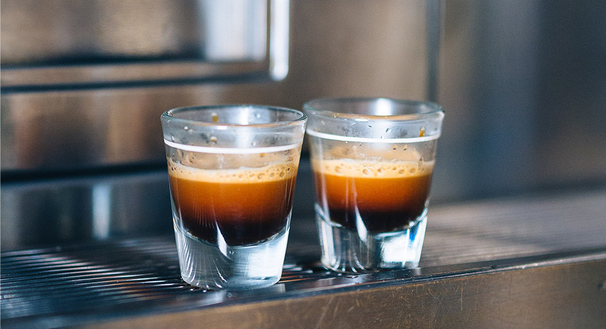
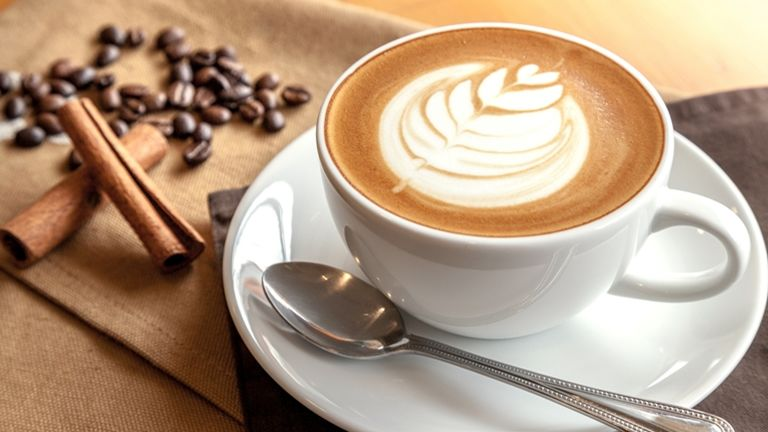
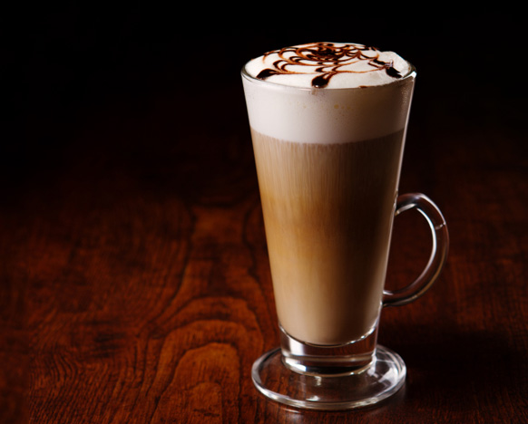

Hogyan készítsd el kedvenc kávéitalod
Az olasz kávé világhírű, efelől nincs kétség. Egy igazi erős, olasz feketekávé azon kívül, hogy elűzi a fáradtságot, igazi gasztronómiai élmény is lehet.
Egy erős reggeli kávé vagy egy lágyabb délutáni ital? Hangulatunknak, ízlésünknek megfelelően többféle kávéitalt készíthetünk. Ahhoz, hogy a kávézás élménye teljes legyen, érdemes tudatosan választani az elkészítési módok közül. A következőkben bemutatjuk a legalapvetőbb kávéitalokat és ismertetjük azokat a legfontosabb tudnivalókat, amelyek segítenek a tökéletes elkészítésükben.
Espresso
Ahhoz, hogy átélhessük az igazi “espresso-élményt”, érdemes jobban megismerni, hogyan és miből készül ez a kávéital. Talán ez a kávé legismertebb elkészítési módja, mégsem születik két egyforma. Habár az espresso megalkotása meghatározott folyamat, a kávészemek származási helyétől, azok pörkölésétől és a kávéfőző fajtától függően egészen különböző eredményt érhetünk el.
De mi is az az “espresso” vagy presszó kávé? Az espressoelnevezése olasz eredetű és az elkészítés gyorsaságára utal. Kb. 30-35 ml zamatos, krémes, barna színű ital bársonyos habbal a tetején, amit “cremának” hívunk. Az igazi olasz espresso forráspont alatt (90-96°C) készül, miközben a vizet egészen pontosan 9 bar nyomáson préselik át a gondosan kiválasztott, finomra őrölt kávén. A folyamat 20-22 másodpercbe telik, ami azért fontos, mert a túl rövid vagy a túl hosszú főzés teljesen más összetételű és erősségű kávét eredményez.
Ristretto
Habár a ristretto egy kevésbé népszerű elkészítési mód, érdemes tudni mi különbözteti meg az espresso-tól. A ristretto kávé rövidebb, kb. 20 ml, de fontos, hogy nem a víz mennyiségének változtatásával, hanem a darálási finomság növelésével készítik. Ennek következtében erőteljesebb aromával, sűrűbb állaggal rendelkezik a presszó kávénál. A ristretto rövidségét a crema teszi tökéletessé.

Americano
Az americanót azoknak ajánljuk, akik “hígabban” szeretik a kávét. A forró vizet nem utólag adjuk hozzá, hanem a főzés előtt öntjük a csészébe. Hasonló eredményt érhetünk el akkor is, ha eleve több vízzel főzzük le, az így készült kávét lungónak nevezzük. Az americano, hosszúsága miatt egy könnyedebb kávéital. A gondosan összekevert arabica és robusta kávészemek találkozásából született kávét leginkább a különleges ízvilágot kedvelő fiatalok részére ajánljuk.
Cappuccino
A cappuccino a kávé egy igazán közkedvelt formája, melynek elkészítési szabálya egyszerű. Három összetevő szükségeltetik hozzá, mégpedig krémes espresso, habosított tej (60-70°C) és tejhab, melynek aránya egyenlő. A cappuccino az olasz kultúrában egy reggeli ital, amelyet speciális csészében, péksüteménnyel együtt szervíroznak.

Latte Machiato
A latte machiatónak már a látványa is élmény, ha igényesen készítik el. Nagy méretű, hosszú pohárba tejhabot öntünk, melynek az aljára leülepedik a forró tej, erre óvatosan rácsurgatjuk az eszpresszót, mely befolyik a tejhab és a forró tej közé, egy háromrétegű (tejhab, eszpresszó, tej) italt eredményezve. A latte machiato egy hosszú, kávéházi beszélgetéshez tökéletes választás lehet. Ha mi magunk szeretnénk elkészíteni, Espresso Italiano Bar Caffeterie-t ajánljuk, ami csokoládés, fűszeres jegyei miatt tökéletesen megállja helyét egy tejes italban is.
